Press kit
The facts, ready-to-use descriptions, screenshots, the logo and a demo video. Questions, an interview, or Premium access to try the AI features for a review? Email support@zayvori.com.
Key facts
- App
- Zayvori: Next-Step To-Do List
- Say it
- zay-VOR-ee. One word, capital Z only.
- What it is
- A to-do list for big jobs that hides what can’t be done yet and shows only your next steps
- Platform
- Android phones, tablets and foldables, on Google Play
- Launched
- 21 November 2026
- Price
- Free. Zayvori Premium adds AI planning and calendar sync for $2.99 a month or $29.99 a year in the US (local prices vary), with a 7-day free trial.
- Languages
- English, Spanish, Portuguese, French, German, Italian, Indonesian, Japanese, Traditional Chinese and Korean
- Privacy
- No account, works offline, plans stay on the phone, no ads or tracking. The Premium AI features send only what you ask for to draft the steps, and nothing is kept.
- Made by
- An independent developer, trading as Zayvori
- Press contact
- support@zayvori.com
- Links
- zayvori.com · X · YouTube · TikTok · Pinterest
Descriptions
Use these as they are, or cut them to fit.
In one line
Zayvori is a to-do list for big jobs that hides what can’t be done yet and shows only your next steps.
Short (about 60 words)
Zayvori is a to-do list app for Android built for jobs with lots of moving parts: a move, a kitchen remodel, an event. Instead of one long list, each plan knows which tasks are waiting for others, so Zayvori shows only what you can do right now. Check one off and the next steps appear. It’s free, needs no account and keeps your plans on your phone.
Longer (about 170 words)
Most to-do apps show every task at once and leave you to work out what can actually happen next. Zayvori, which launched on Google Play in November 2026, does the opposite: build a plan once, and it keeps track of what’s waiting for what, showing only your next steps.
Plans can split, run side by side and come back together, with room for a plan B. Waiting on two contractor quotes? The first one back moves the job forward, and the other is set aside automatically. A map shows the whole job at a glance, the Today tab gathers what’s due across every plan, and reminders let you check things off right from the notification.
Zayvori Premium adds AI planning: describe a plan in a sentence, such as “Christmas dinner for 8, on the table at 2pm,” and it drafts the steps, order and timings for you to look over. Everything else is free. The app works offline, needs no account, keeps plans on the phone and has no ads or tracking. It’s available in ten languages.
What makes it different
- Only your next steps. Tasks that are waiting on something stay out of the way until they’re ready, so the list is always things you can do now.
- Room for a plan B. Mark a step “any one is enough”: the first route that’s done moves the plan on, and the others are set aside by themselves.
- Plans in a sentence (Premium). Type or say what you need to do and by when. Claude, an AI from Anthropic, drafts the plan by the day or by the hour, for you to check before you begin.
- Private by design. No account and no server holding your plans. Backups are a file you keep wherever you like.
Demo video
A real screen recording, 18 seconds, no sound: a one-line description of a move becomes a plan, then a short list of next steps, and checking one off brings up the next.
Download the MP4 · More demos with captions and music are on YouTube.
Screenshots
Real screens from the app in English, 640 × 1436. Select one to open the full-size file.

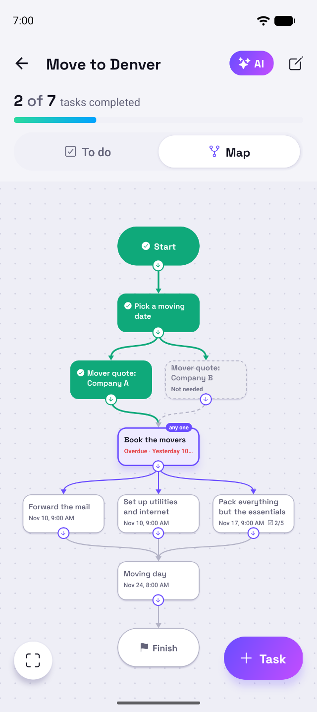

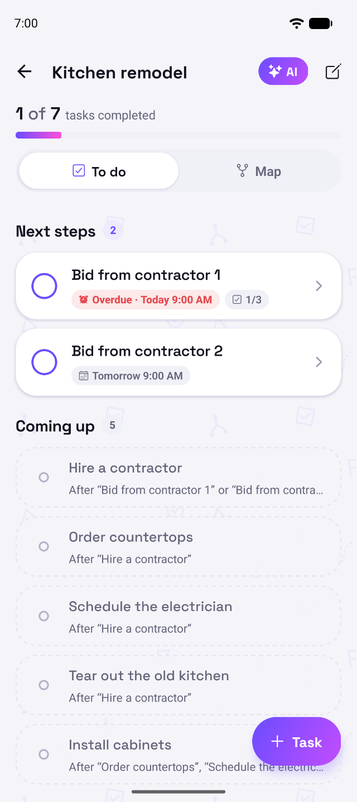

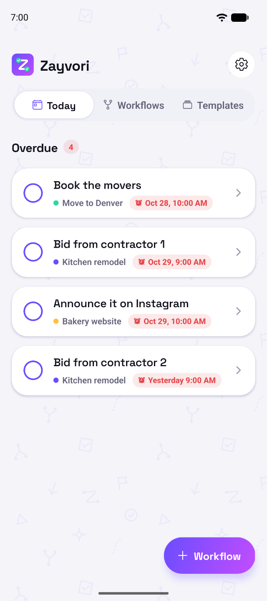

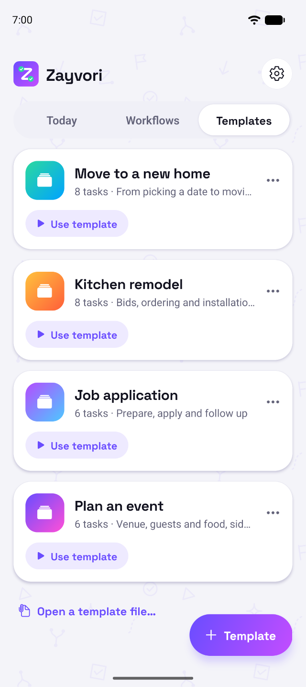

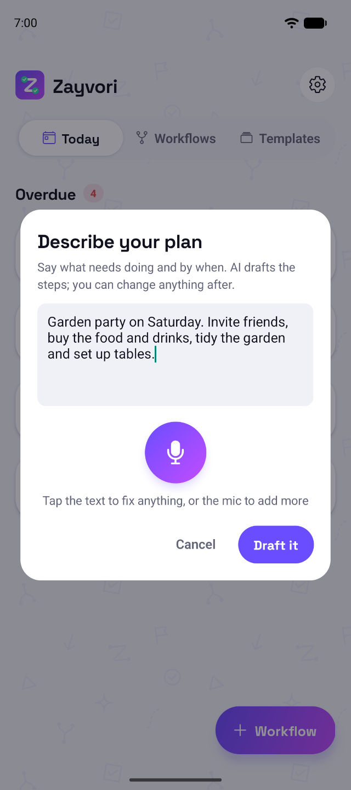

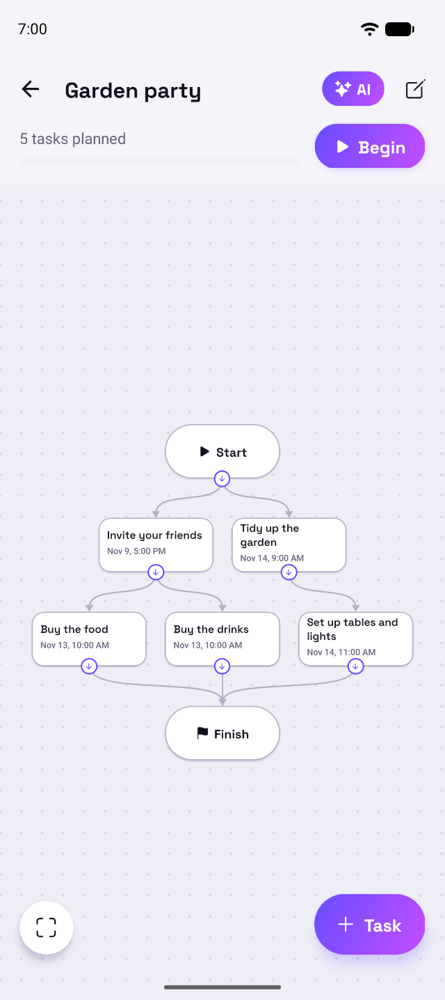

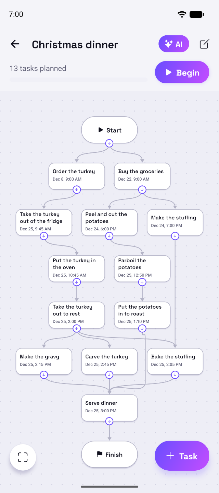

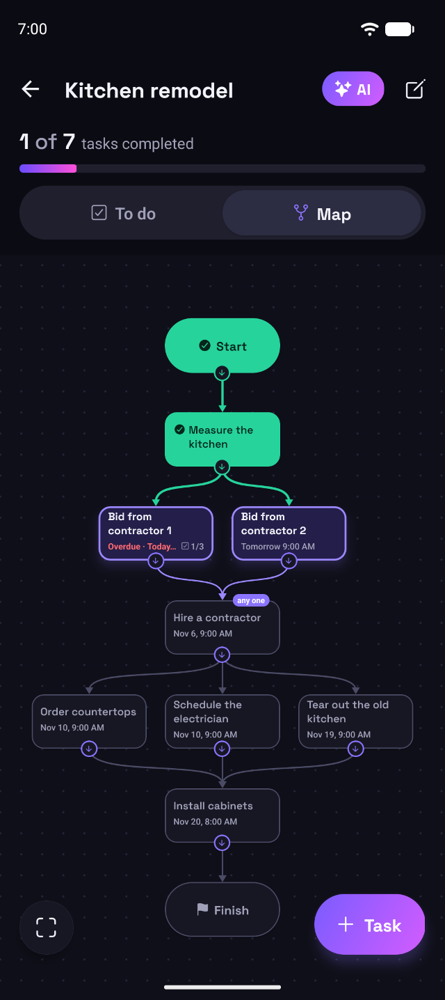

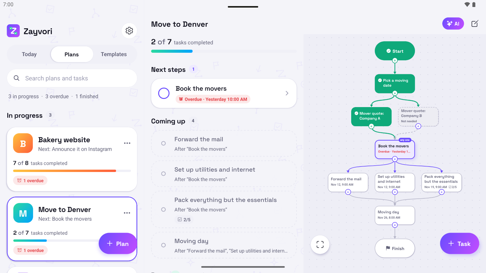
Logo and graphics

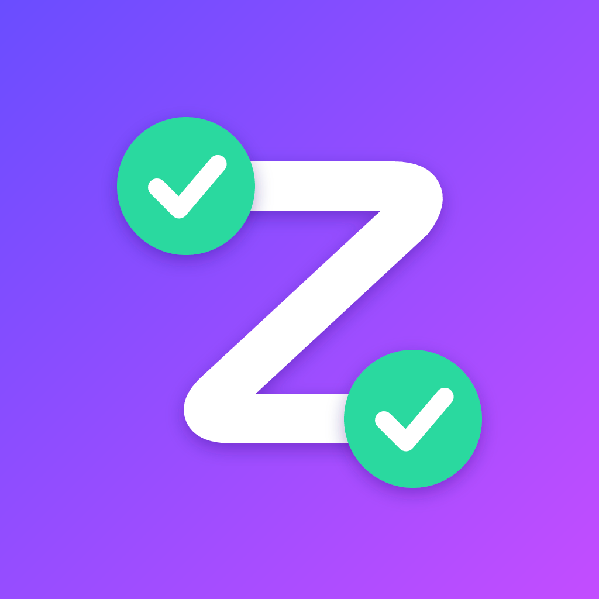


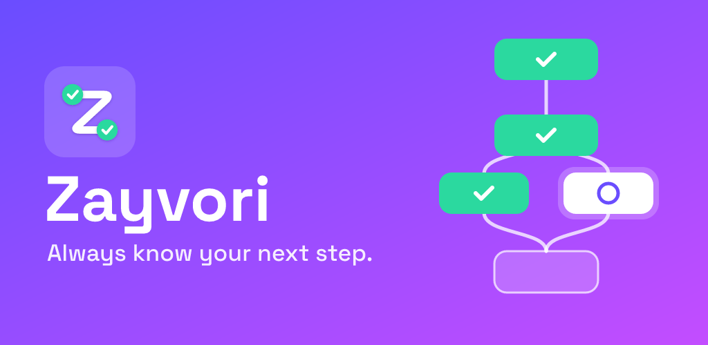
The mark is a white route shaped like a Z, between two green “done” ticks. Please don’t recolor or stretch it. Brand colors: violet #6A4DFF to magenta #C34DFF, with mint #2BD99F ticks.